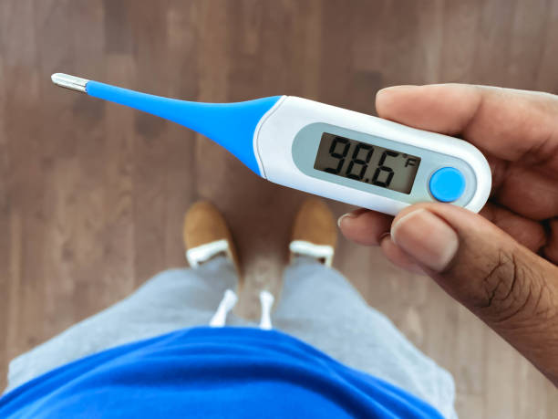

There are different types of thermometers for measuring the temperatures of different things like air,our bodies,food and many other things.There are clinical thermometers,Galileo thermometers,maximun-minimum thermometers and digital remote thermometers.Among these,the commonly used thermometers are clinical termometers and laboratory thermometers.
Doctors use a thermometer to measure temperature of our bodies.This thermometer is called the Clinical Thermometer.There are two types of scales marked on the thermometer one starts with 35degrees and ends at 45 degrees is Celsius scale.While the other that strats with 94 degrees and ends at 108 degrees in the Fahreheit scale.
Wash the thermometer and hold it firmly by the end and give it a few jerks.These jerks will bring level of Mercury down.Ensure it falls under 35C.Now place thermometer under your tongue or armpit.After one minute take the thermometer and note the reading.The normal temperature of human body is 37C.
Digital thermometers are used to repalce clinical thermometers as mercury used in clinical thermometer is toxic.They give the direct temperature value.
To measure temperature of other objects like in laboratories this thermometer is used.